#Chapter 6 — Writing and Scaling Code-Based Evals
#In one line
Code-based evals are deterministic Python functions that take an AI system's trace and return pass/fail plus a reason string — they are the cheap, fast, 100%-reproducible floor of your eval suite and the hard gate every prompt or model change must clear before it ships.
#Why it matters for PMs
For a PM, code-based evals are the difference between shipping on evidence and shipping on vibes. Without them, the only way to know a prompt change didn't break something is to eyeball a handful of outputs — a "vibe check" that misses regressions and doesn't scale. With them, you get an immediate, comparable signal on every release candidate: this change dropped category-label compliance from 92% to 78%, or this prompt update pushed latency from 1.1s to 2.4s and blew the SLA.
The PM's job here is specific and non-delegable: PMs lead on prioritizing and framing which properties get measured, and on setting the thresholds. You decide that "category label must be above 90% to ship" before anyone sees the number — because the moment you've seen 82% and you want to ship, you can no longer be trusted to judge whether 82% is good enough. Engineering runs the suite across the dataset; the PM owns the bar. Code evals are also the cheapest possible quality investment: deterministic checks cost nothing per run, so there's no token budget reason not to run them on every change.
#Core concepts
- Code-based evaluator — a plain Python function that takes a trace and returns a deterministic pass or fail. No LLM call, no probability distribution, the same input yields the same result every time. That determinism is the entire point.
- Trace — the full record of an AI system's behavior on one input: the output string, the JSON response, the sequence of tool calls, or any combination. Some evals also take the original user input to check context-dependent properties (e.g., did the output reference a ticket ID that was actually in the input?).
- Reason string — the non-optional second half of an eval's output. When trace #38 of 50 fails, "Output contains no valid category label" tells you what to investigate; "False" tells you nothing. The reason string is what makes a failing suite debuggable at scale.
- Pass rate — the percentage of dataset rows that pass a given eval. Your baseline pass rate on the current production version is the reference point for every future comparison.
- Release gate — the eval suite functions as a gate before shipping, not a post-mortem after an incident. Each eval has an explicit, pre-committed threshold; failing the gate blocks the change.
- The 10-line rule of thumb — if you can write the success condition as a Python function in under ten lines, it belongs in code. If expressing it requires understanding intent, evaluating tone, or reasoning about quality, it's an LLM judge.
- Floor, not ceiling — code evals verify the specific properties you chose to measure. They cannot tell you whether the agent is helpful, coherent, or empathetic. A green code-eval suite is not the same as a good agent.
#The mental model — how to think about this
Think of code-based evals as the unit tests of an AI system. A unit test doesn't tell you the product is good — it tells you that a specific, mechanical thing you care about still works. You don't write a unit test for "is this feature delightful"; you write one for "does this function return the right type." Code evals are exactly that: mechanical, deterministic guardrails on the parts of AI behavior that are objectively checkable.
The sharpest line in the module is mechanical, not conceptual. A tool-call failure (calling a tool that doesn't exist, omitting a required parameter, invoking steps out of order) is mechanical — code catches it perfectly. Whether the agent's tone was appropriately reassuring to an angry customer is conceptual — code is useless there. Sort every candidate eval into one of those two bins first. Everything mechanical goes to code by default; reach for an LLM judge only when you've confirmed the property is genuinely conceptual. Every hour spent writing an LLM judge for something code could check is an hour stolen from the genuinely hard problems.
The second mental shift: code evals are the bedrock, the default path, the thing you build first — not a nice-to-have you add later. When you have them, you can move fast because you'll know instantly when something breaks. When you don't, you're back to vibe checks.
#Key frameworks / steps / loops
The three-part anatomy of every code eval
- Inputs — the full trace (output string, JSON, tool-call log, or combination), optionally plus the original user input for context-dependent checks.
- The check — the logic: a condition, pattern match, schema validation, count, or threshold comparison — expressible precisely in code without language understanding.
- The output — pass or fail, plus a reason string (mandatory, for debugging at scale).
The four trace-property types ideal for code evals
- Structure & format — schema conformance: required JSON fields present, required sections included, character count under a UI limit. Most critical when AI output feeds a downstream pipeline, where a malformed output that passes a vibe check can silently break production. (Triage example: does the JSON include both a category label and a priority level? Is the summary under 500 characters?)
- Presence & coverage — string-matching and regex checks: does the output contain the required keyword, product name, ticket ID, or policy language? Does it omit required elements? (Triage example: does the response reference only ticket IDs that appeared in the input?)
- Tool call sequencing — did the agent call the right tools, in the right order, with the right parameters? Tool-call logs are structured data, trivial to check programmatically. Called out as one of the most underused and most valuable categories. (Triage example: did it call Subscription_Check before Resolution_Step? Pass the correct user_id? Avoid triggering Escalation below the severity threshold?)
- Threshold checks — any numeric property (latency, cost, token count, confidence score) compared against a number. Catches regressions that quality checks miss — a prompt that passes every quality check but doubles latency is still a problem. (Triage example: latency under 2s? Within character limit? Cost-per-ticket within budget?)
The dataset run loop
- Take a reference dataset (e.g., the 50-ticket golden set from the trace-analysis module).
- Run each eval function against each row.
- Record pass/fail and the reason string for every combination.
- Look at the aggregate through three lenses:
- Pass rate vs. the production baseline (a 92%→78% drop is a failure even if spot-checked outputs look fine).
- Failure distribution — do failures cluster on specific input types (short tickets, ambiguous tickets, non-English inputs)?
- Cross-eval correlation — rows where multiple evals fail together signal input complexity, not independent bugs.
Debugging-the-eval loop (the 0% rule)
- A 0% (or unexpectedly low) pass rate almost always means a bug in the eval, not a broken agent.
- Read five failure reasons. If they all say "No valid category label found" on outputs that clearly contain labels, you have a case-sensitivity bug in your string matching.
- Fix the eval before you investigate the agent. Only once the eval logic is verified does the low pass rate become a trustworthy diagnostic signal.
The release-gate workflow
- Set up: a reference dataset, a baseline pass rate per eval on the current production version, and an explicit threshold per eval.
- On every change: run the suite, compare to baseline, check against thresholds.
- Set thresholds before iterating, not after. Write them down. Treat them as hard gates.
- Scale the bar to the change: major architectural changes (new retrieval method, new model family) warrant a higher bar and a larger dataset; small prompt tweaks can use a narrower margin.
#Visual explainers
(The module embeds 12 figures. Captions below are inferred from filenames and the surrounding text — note them when teaching; the originals live on the Reforge/Docebo SCORM CDN.)
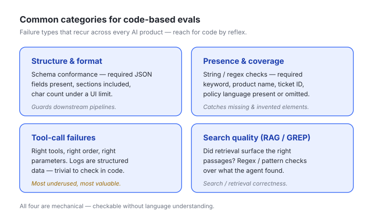
ch5-01-code-eval-categorie.jpg) — Shows the four product-agnostic categories that are strong candidates for deterministic checks: structure/format, presence/coverage, tool-call failures, search-quality (RAG/GREP). Teaching point: certain failure types recur across every AI product — learn to recognize them so you reach for code by reflex.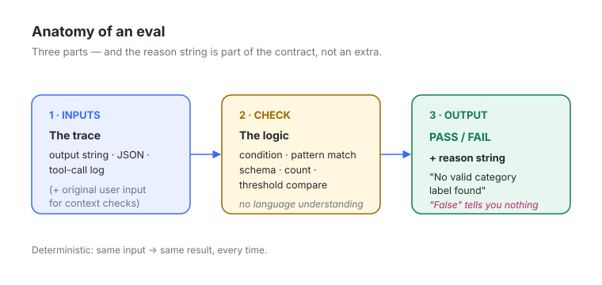
ch5-02-eval-anatomy.jpg) — Diagrams the three-part structure: Inputs (trace) → Check (logic) → Output (pass/fail + reason string). Teaching point: every code eval, no matter how simple, has these three parts; the reason string is part of the contract, not an extra.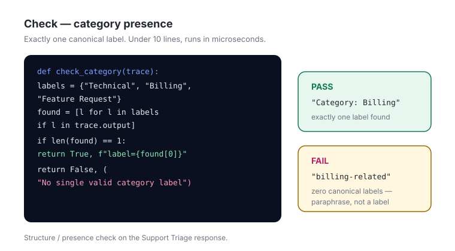
ch5-03-check-category-pres.jpg) — The ~8-line Python function that verifies a Support Triage response contains exactly one canonical label (Technical / Billing / Feature Request). Teaching point: this is what "under 10 lines, runs in microseconds" looks like in practice.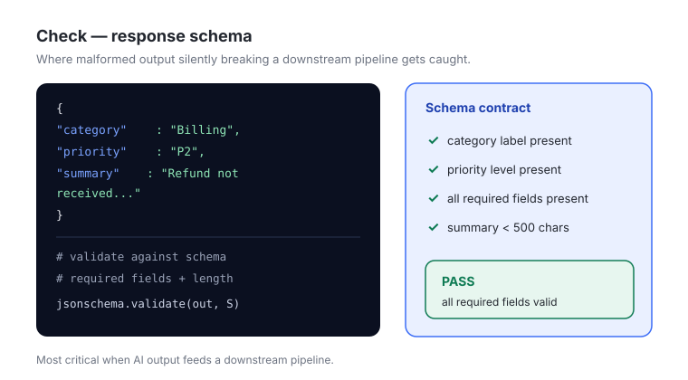
ch5-04-check-response-sche.jpg) — A structure/format check: does the JSON contain both a category label and a priority level, all required fields present, summary under 500 chars? Teaching point: schema validation is where malformed output silently breaking a downstream pipeline gets caught.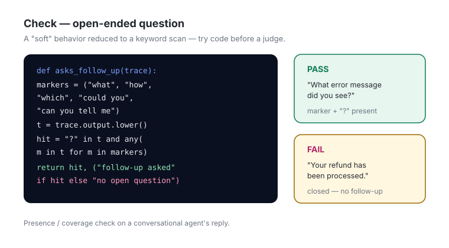
ch5-05-check-open-question.jpg) — A presence/coverage check that scans for open-ended-question markers to evaluate whether a conversational agent asks good follow-ups. Teaching point: even a "soft"-sounding behavior can sometimes be reduced to a keyword scan — try code before assuming you need a judge.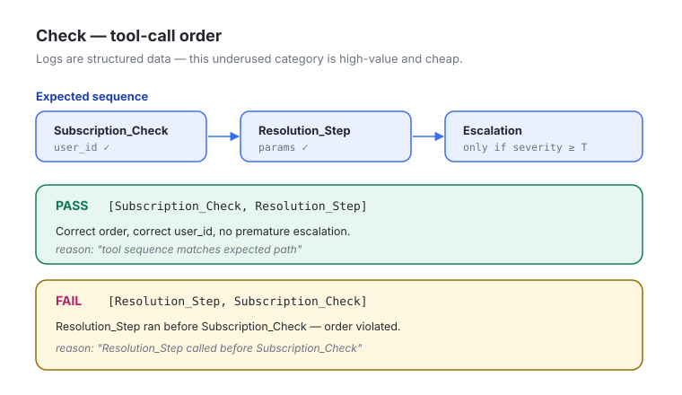
ch5-06-check-tool-call-ord.jpg) — Verifies the agent called tools in the correct sequence with correct parameters (e.g., Subscription_Check before Resolution_Step). Teaching point: tool-call logs are structured data — this underused category is high-value and cheap.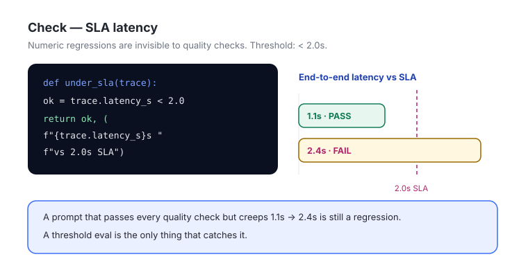
ch5-07-check-sla-latency.png) — A threshold check confirming end-to-end latency stays under 2 seconds. Teaching point: numeric regressions are invisible to quality checks; a threshold eval is the only thing that catches a 1.1s→2.4s creep.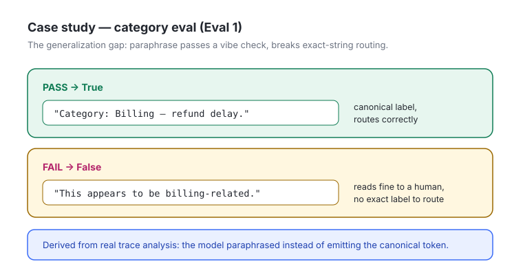
ch5-08-case-study-category.jpg) — Eval 1 with passing vs. failing examples ("Category: Billing…" → True; "This appears to be a billing-related issue." → False). Teaching point: the generalization gap — paraphrase passes a vibe check but breaks exact-string routing downstream.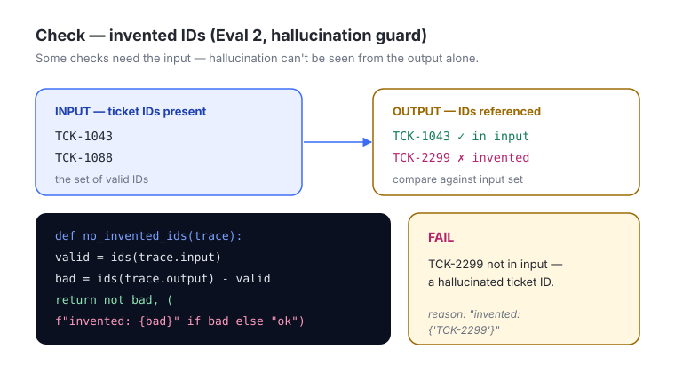
ch5-09-check-invented-ids.jpg) — Eval 2, the hallucination guard: compares ticket IDs in the output against IDs in the input, failing on invented ones. Teaching point: some checks require the input, not just the output — hallucination can't be seen by reading the output alone.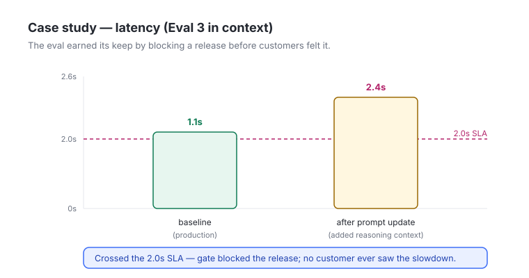
ch5-10-case-study-latency.jpg) — Eval 3 in context, showing the caught regression (avg 1.1s → 2.4s after a prompt update added reasoning context). Teaching point: the eval earned its keep by blocking a release before customers felt it.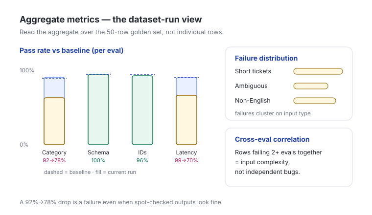
ch5-11-aggregate-metrics.jpg) — The dataset-run results view: pass rate, failure distribution, cross-eval correlation across the 50-row golden set. Teaching point: you read the aggregate, not individual rows — patterns in failures are the diagnostic.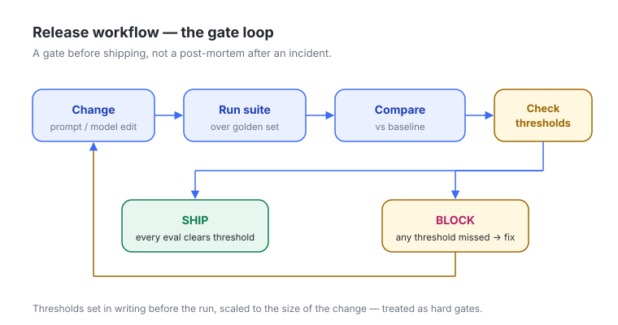
ch5-12-release-workflow.jpg) — The gate loop: change → run suite → compare to baseline → check thresholds → ship or block. Teaching point: this is a gate before shipping, not a post-mortem after an incident.#How this connects to: simulation / dataset strategy / synthetic data / actual data
- Dataset strategy — code evals are only as good as the reference dataset they run against. The module reuses the 50-ticket golden set from the earlier trace-analysis module as the spine of every example. The dataset is where you encode the input diversity (short tickets, ambiguous tickets, non-English inputs) whose failure distribution the evals then surface. Bigger/architectural changes call for a larger reference dataset, so dataset sizing is a deliberate lever, not a fixed asset.
- Actual data (production traces) — the three case-study evals didn't come from imagination; they came from trace analysis of real error patterns in Module 1. Production traces tell you which mechanical failures actually happen (paraphrased labels, invented ticket IDs, latency creep), and those become your first code evals. Code evals can also run on the critical path of the production pipeline to catch failures in real time, not just offline — actual data is both the source and the runtime target.
- Synthetic data — not directly named in this module, but the natural complement: when production traces don't yet cover an input type (non-English tickets, edge-case formats), synthetic inputs let you stress the same deterministic checks before those cases appear in the wild. The checks themselves are reusable across real and synthetic rows because they're deterministic.
- Simulation — tool-call-sequencing and threshold evals are what make agent simulation meaningful: when you replay or simulate an agent over a dataset, the code evals are the scoring function that turns a pile of simulated traces into a pass rate. Code evals are the floor; LLM judges and human review (covered in adjacent modules) layer on top for the conceptual properties code can't reach.
#Working with ML / eng teams
The division of labor is explicit in the module: PMs lead on prioritizing and framing the evals; engineering runs them systematically across the dataset and wires them into the workflow. Concretely:
- PM owns: which trace properties matter (derived from trace analysis), the success/failure definition in plain language (with passing and failing examples), the threshold per eval, and the pre-commitment that the threshold is a hard gate.
- Eng owns: implementing the eval functions, running them against every dataset row, recording pass/fail + reason strings, and integrating the suite into CI so it fires on every prompt change and model upgrade.
- Shared loop: when a pass rate looks wrong, the first conversation is "is the eval buggy?" not "is the agent broken?" — the 0%/case-sensitivity rule is a PM-eng debugging protocol, not just an eng concern. Read five reason strings together before anyone touches the agent.
- Bring eng the examples, not just the rule. "Category: Billing…" → True and "This appears to be a billing-related issue." → False is far more implementable than "check the category is right." Passing/failing pairs are the spec.
#Role of design
Design's role here is indirect but real, surfacing through the structure/format and threshold categories:
- UI limits become eval thresholds. "Summary under 500 characters" and "response within the character limit" are design constraints (what fits in the card, the panel, the notification) translated directly into deterministic checks. When design changes a layout constraint, a code eval threshold should change with it.
- Latency SLAs are experience requirements. The sub-2-second classification target is a perceived-performance decision as much as an engineering one; design and PM jointly own what "feels fast enough" before it becomes a hard threshold.
- Downstream-consumption contracts. When AI output feeds a UI component or another system, the schema the design/front-end expects (category label + priority level, required fields) is the schema the structure eval enforces. Design defines the contract; the eval guards it.
#Process to follow
- Start from trace analysis. Pull the recurring error patterns from real production traces. Don't invent evals — derive them.
- Sort each candidate property into mechanical vs. conceptual. Mechanical → code (default). Conceptual (intent, tone, quality) → LLM judge (later module). Apply the 10-line rule of thumb.
- Bin each mechanical eval into one of the four types (structure/format, presence/coverage, tool-call sequencing, threshold) — this tells you the check pattern.
- Write each eval with all three parts, including a meaningful reason string. Keep it under ~10 lines.
- Write passing and failing examples for each eval before implementing — they're the spec for eng and the regression test for the eval itself.
- Hand to eng to run across the reference dataset, recording pass/fail + reasons per row.
- Establish the baseline pass rate per eval on the current production version.
- Set explicit thresholds in advance, in writing, scaled to the size of the change. Treat them as hard gates.
- Verify the eval before trusting the result — on any unexpected/0% pass rate, read five reasons and rule out an eval bug first.
- Wire the suite into the release workflow so it runs automatically on every prompt change and model upgrade; ship only when every eval clears its threshold.
- Remember the ceiling. Layer LLM judges, human review, and user feedback on top for the helpful/coherent/empathetic properties code can't reach.
#References & sources
- Source module: "Writing and Scaling Code-Based Evals for AI Systems" — Notion meeting note dated 2026-06-06 (
3775d11649418036a5f1e4085b1591d2), part of the Meeting Notes database. Parent course page:3775d1164941801b91ffd86bb96280b9. - Course platform: Hosted on Reforge via Docebo SCORM (course module "Code-based Evaluation"; cdn5.dcbstatic.com / reforge_docebosaas_com). Three lessons: (1) Intro, (2) Writing and Scaling Code-based Evals, (3) Recap and Further Learning.
- Running example / dataset: The Support Triage Agent and its 50-ticket golden set (carried over from the earlier trace-analysis module, referred to as "Module 1").
- Concepts & terms defined in the module: Code-based eval; Reason string; Tool call failures; Release Gate (defined in general-IT terms); RAG (Retrieval-Augmented Generation); GREP (Global Regular Expression Print) — note: the module text alternates between "GRAG"/"GRAP"/"GREP"; the glossary settles on GREP as the search/regex utility behind "search quality problems."
- Forward references: Next module — LLM-as-Judge evaluators for quality dimensions code can't reach (tone, actionability, factual grounding). Adjacent layers — human review and user feedback.
- 12 embedded figures (ch5-01 through ch5-12), hosted on the Reforge/Docebo SCORM CDN — listed individually in Visual explainers above.
#Skill / template / app ideas
/code-eval-scaffold— given a plain-language success condition + passing/failing examples, classify it (mechanical vs. conceptual), bin it into one of the four types, and emit a <10-line Python eval function with a reason string and a docstring spec for eng.- Eval-suite spec template — a one-pager per eval: property name, source trace pattern, type, check logic, passing example, failing example, baseline pass rate, committed threshold, gate (yes/no). Forces threshold-before-results discipline.
- Dataset-run dashboard app — feed pass/fail + reason strings per row; render pass rate vs. baseline, failure distribution by input attribute, and a cross-eval correlation heatmap to spot complex inputs. (Could live alongside the existing token/health dashboards.)
- Mechanical-vs-conceptual sorter — a quick decision-aid that takes a candidate eval description and returns "code" or "LLM judge" with the 10-line rationale, so PMs stop hand-building judges for things code handles.
- Release-gate checklist skill — pre-ship gate that confirms every eval has a written threshold set before the run, blocks if any threshold was edited after results were seen, and produces the ship/block verdict.
#Teaching notes (for the instructor)
- Lead with the contrast that lands: "vibe checks vs. deterministic gates." PMs feel the pain of shipping-on-vibes immediately; that's the hook.
- The single most important sentence to drill: "If you can write the success condition as a Python function in under ten lines, it belongs in code." Repeat it; it's the practical heuristic learners will actually carry out of the session.
- Make them write reason strings. Run a one-minute exercise: show a trace that fails, and have learners write the reason string. Then show them "False" and ask which one they'd want at 11pm during a release. This makes the "reason string is not optional" rule stick.
- Emphasize tool-call sequencing — the module flags it as the most underused, most valuable category. PMs default to checking outputs; nudge them to check the path the agent took.
- The threshold-before-results point is the integrity lesson. Spend real time here: "the decision of whether 82% is good enough should not be made after you've seen 82% and want to ship." This is the part PMs get wrong in practice.
- Hammer "floor, not ceiling" at the end so no one leaves thinking a green suite means a good agent. It's the natural bridge to the LLM-as-Judge module that follows.
- Use the three case-study evals as the spine of the whole session — category-label format, hallucination guard, latency SLA. Together they map cleanly to format / hallucination / performance, and to three of the four trace-property types, so they double as a memorable taxonomy.
- Watch the source typos: the audio transcript garbles a few terms ("Ruby Bell Suite" = "reliable eval suite," "trace codes" = "trace properties/types," "Total Sequencing" = "Tool-call Sequencing," "GRAP/GRAG" = "GREP/RAG"). Teach the clean terms; don't propagate the transcription errors.